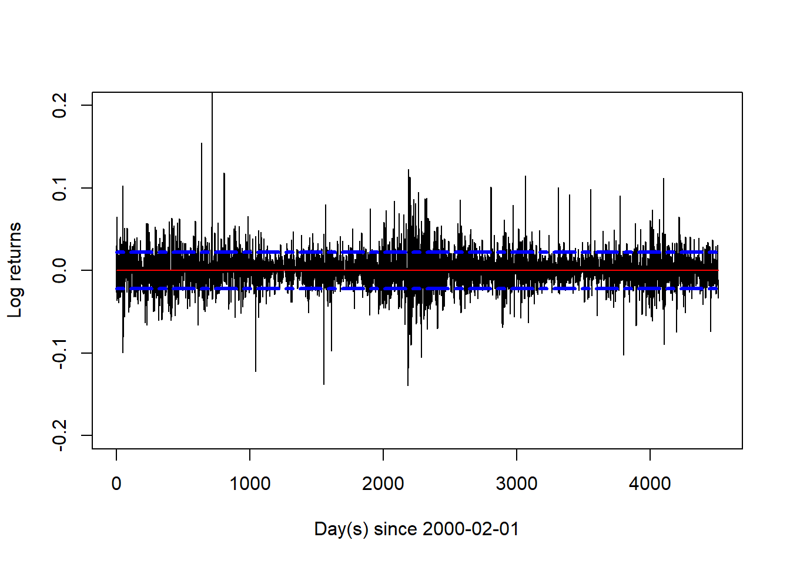

x <- 2
a <- 3
b <- 2
z <- x ^ (a ^ b)
z
#> [1] 51214 Exercise set 2
14.1 (1)
Give R assignment statements that set the variable \(z\) to.
(a). \(x^{a^b}\)
Solution:
(b). \((x^a)^b\)
Solution:
z <- (x ^ a) ^ b
z
#> [1] 64(c). \(3x^3 + 2x^2 + 6x + 1\)
Solution:
z <- 3 * x ^ 3 + 2 * x ^ 2 + 6 * x + 1
z
#> [1] 45(d). \(z+1\)
Solution:
z <- z + 1
z
#> [1] 4614.2 (2)
Give R expressions that return the following matrices and vectors:
(a). \((1,2,3,4,5,6,7,8,7,6,5,4,3,2,1)\)
Solution:
c(1:8, 7:1) # Simple concatenation, but notice how 7:1 returns a decreasing vector of integers 1 to 7.
#> [1] 1 2 3 4 5 6 7 8 7 6 5 4 3 2 1(b). \((1,2,2,3,3,3,4,4,4,4,5,5,5,5,5)\)
Solution:
rep.int(x = 1:5, times = 1:5) # `rep.int` is faster than `rep` and only requires two arguments. We're essentially pairing the n'th input in the vector given in the x argument to the n'th input in the vector given in the times argument.
#> [1] 1 2 2 3 3 3 4 4 4 4 5 5 5 5 5(c).
\[ \left( \begin{matrix} 0 & 1 & 1 \\ 1 & 0 & 1 \\ 1 & 1 & 0 \end{matrix} \right) \]
Solution:
1 - diag(3) # We create a matrix of ones and subtract an identity matrix of size 3
#> [,1] [,2] [,3]
#> [1,] 0 1 1
#> [2,] 1 0 1
#> [3,] 1 1 0(d).
\[ \left( \begin{matrix} 0 & 2 & 3 \\ 0 & 4 & 0 \\ 7 & 0 & 0 \end{matrix} \right) \]
Solution:
14.3 (3)
Use R to produce vector containing all integers from 1 to 100 that are not divisible by 2, 3, or 7.
Solution:
14.4 (4)
Build a 10 x 10 identity matrix. Then make all the non-zero elements 5. Do this latter step in at least two different ways.
Solution:
mI <- diag(10) # 10 x 10 identity matrix
mI[mI != 0] <- 5 # Making the non-zero elements 5 by using indexing
mI
#> [,1] [,2] [,3] [,4] [,5] [,6] [,7] [,8] [,9] [,10]
#> [1,] 5 0 0 0 0 0 0 0 0 0
#> [2,] 0 5 0 0 0 0 0 0 0 0
#> [3,] 0 0 5 0 0 0 0 0 0 0
#> [4,] 0 0 0 5 0 0 0 0 0 0
#> [5,] 0 0 0 0 5 0 0 0 0 0
#> [6,] 0 0 0 0 0 5 0 0 0 0
#> [7,] 0 0 0 0 0 0 5 0 0 0
#> [8,] 0 0 0 0 0 0 0 5 0 0
#> [9,] 0 0 0 0 0 0 0 0 5 0
#> [10,] 0 0 0 0 0 0 0 0 0 5
# Other solutions
mA <- diag(10)
mA <- ifelse(mA != 0, 5, mA) # Using if-else
all.equal(mI, mA)
#> [1] TRUE
mB <- diag(10)
diag(mB) <- 5 # Modify the diagonal directly
all.equal(mI, mB)
#> [1] TRUE14.5 (5)
Consider the function \(y=f(x)\) defined by:
\[
f(x)=
\begin{cases}
-x^3, \text{ if } x \le 0 \\
x^2, \text{ if } x \in (0,1] \\
\sqrt{x}, \text{ if } x > 1
\end{cases}
\] Supposing that you are given \(x\), write an R expression for \(y\) using if statements.
Solution:
f <- function(iX) {
if (iX <= 0) {
return(- iX ^ 3)
} else if (iX <= 1) {
return(iX ^ 2)
} else {
return(sqrt(iX))
}
}
set.seed(1)
x <- runif(n = 1, min = -1, max = 2) # Random variable with equal probability of being in the three categories.
cat("x is: ", x, " and y is: ", f(x))
#> x is: -0.203474 and y is: 0.008424164
# Bonus: the function in one-line: f <- function(iX) ifelse(iX <= 0, -iX ^ 3, ifelse(iX <= 1, iX ^ 2, sqrt(iX)))14.6 (6)
Let \(h(x,n)=1+x+x^2+x^3+\cdots+x^n=\sum_{i=0}^{n}x^i\). Write an R program to calculate \(h(x,n)\) using a for loop.
Solution:
# Note, this is just a finite geometric series
iX <- 5 # Example values
iN <- 4
iGeoSum <- 0
for (iIte in 0:iN) {
iGeoSum <- iGeoSum + iX ^ iIte
}
iGeoSum
#> [1] 78114.7 (7)
First, write a program that achieves the same result as in Exercise 6 but using a while loop.
Then, write a program that does this using vector-operations (and no loops).
Solution:
iX <- 5 # Example values
iN <- 4
iGeoSum <- 0
iIte <- 0
while (iIte <= iN) {
iGeoSum <- iGeoSum + iX ^ iIte
iIte <- iIte + 1
}
iGeoSum
#> [1] 781
sum(iX ^ (0:iN)) # Vector-operations. The one-liner uses element-wise exponentiation against a vector of increasing integers. This creates a vector of the individual x^i's that we then sum.
#> [1] 78114.8 (8)
How would you find the sum of every third element of a vector \(x\)?
Solution:
14.9 (9)
Write a program that uses a loop to find the minimum of a vector \(x\), without using any predefined functions like min or sort.
Solution:
set.seed(1)
vX <- runif(n = 250) # 250 random values
dMin <- vX[1]
for (iN in 1:length(vX)) {
if (vX[iN] < dMin) dMin <- vX[iN] # We loop over the vector vX and assign the value at the index iN if it is lower than our current lowest value
}
dMin # Print the minimum value
#> [1] 0.01307758
min(vX) # Verifying the result
#> [1] 0.0130775814.10 (10)
A room contains 100 toggle switches, originally all turned off. 100 people enter the room in turn. The first toggles every switch, the second toggles every second switch, the third every third switch, and so on, to the last person who toggles the last switch only. At the end of this process, which switches are turned on?
Solution:
vX <- rep(0L, 100)
for (i in 1:100) {
vX[seq_along(vX) %% i == 0] <- bitwXor(vX[seq_along(vX) %% i == 0], 1) # Using bitwise logical operations is slightly overkill
# This also works
# vX[seq_along(vX) %% i == 0] <- !vX[seq_along(vX) %% i == 0]
}
vX
#> [1] 1 0 0 1 0 0 0 0 1 0 0 0 0 0 0 1 0 0 0 0 0 0 0 0 1 0 0 0 0 0 0 0 0 0 0 1 0
#> [38] 0 0 0 0 0 0 0 0 0 0 0 1 0 0 0 0 0 0 0 0 0 0 0 0 0 0 1 0 0 0 0 0 0 0 0 0 0
#> [75] 0 0 0 0 0 0 1 0 0 0 0 0 0 0 0 0 0 0 0 0 0 0 0 0 0 1
which(vX == 1) # Perfect squares! :-)
#> [1] 1 4 9 16 25 36 49 64 81 10014.11 (11)
Load the historical prices of MAERSK from the file MAERSK-B.CO.csv available in blackboard. Compute the percentage log-returns and plot the associated time-series. Add a red coloured horizontal line to the plot indicating the average value. Add one standard deviation confidence bands to the average value as dashed blue lines.
Solution:
mMaerskData <- read.csv("MAERSK-B.CO.csv", header = TRUE, sep = ",", na.strings = "null")
vY <- diff(log(na.omit(mMaerskData[, "Adj.Close"]))) # Log-returns
# Line plot
plot(1:length(vY), vY, type = "l", ylim = c(-0.2, 0.2), ylab = "Log returns", xlab = paste0("Day(s) since ", min(mMaerskData$Date)))
# Mean
lines(1:length(vY), rep(mean(vY), length(vY)), col = "red", lwd = "1")
# Confidence bands
lines(1:length(vY), rep((mean(vY) + sqrt(var(vY))), length(vY)), col = "blue", lwd = "3", lty = 6)
lines(1:length(vY), rep((mean(vY) - sqrt(var(vY))), length(vY)), col = "blue", lwd = "3", lty = 6)